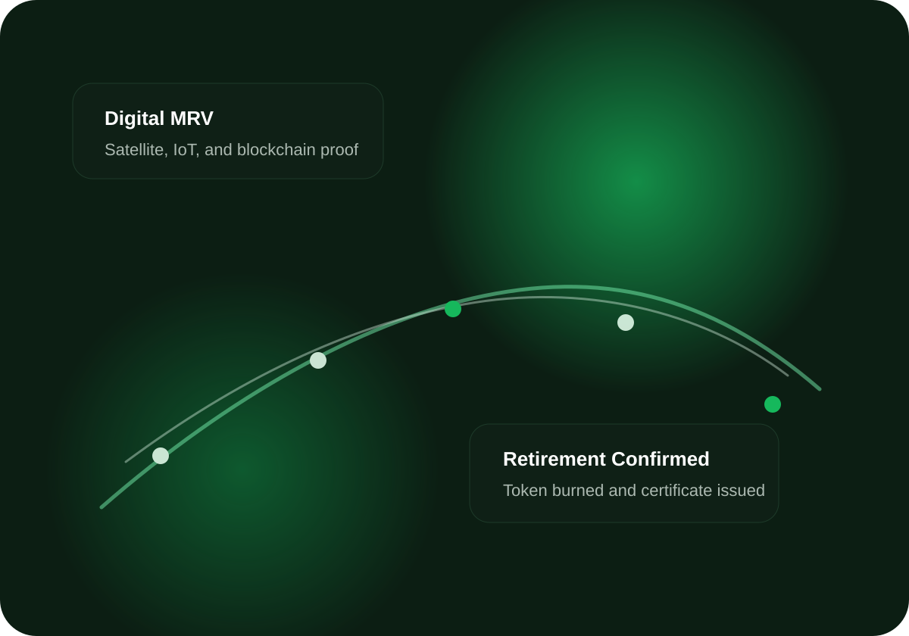

Live Carbon Data Integration
Transparent. Verified. Tokenized Carbon Credits for a Sustainable Future.
NusaCarbon menghubungkan project owner, verifier, dan buyer dalam satu platform carbon marketplace berbasis blockchain dengan digital MRV dan pencegahan double offset claim.
2.5M+
Credits retired
150+
Verified projects
$12M
Marketplace volume
100%
Traceability
